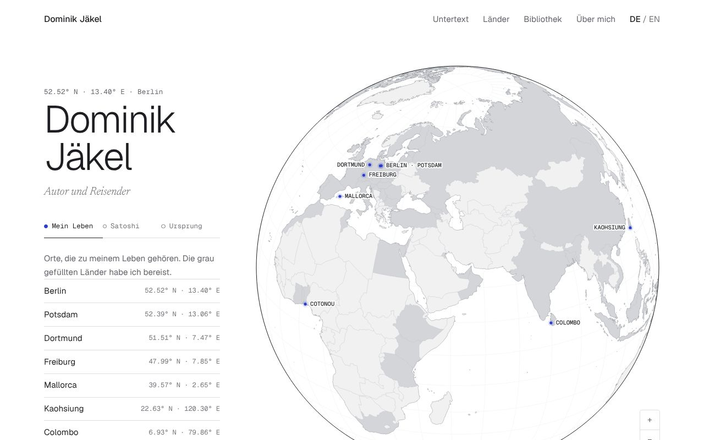

Entwurf D · neu
Globus
Weiß und Graphit, ein Globus zum Reinzoomen.
Feine Ländergrenzen, 65 bereiste Länder und Gebiete, Ebenen für das eigene Leben, den Roman Satoshi und die Ursprungstrilogie. Darunter eine Bibliothek, aus der man Bücher herausziehen kann.
- Rundflug über alle Schauplätze von Satoshi
- Länderregister nach Kontinenten